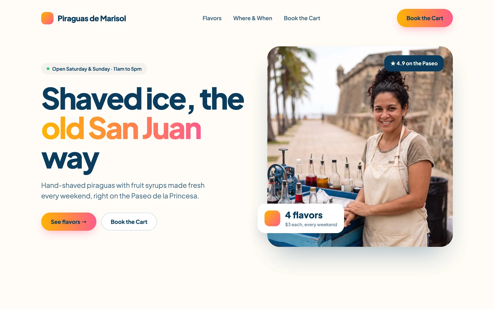
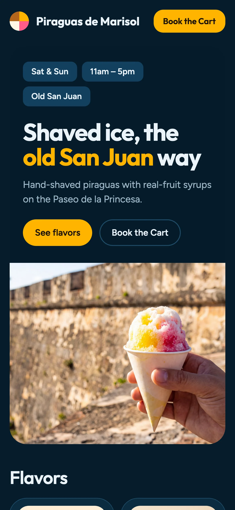

Let Bolt.new enhance your prompt
One button turns your rough notes into a detailed design spec.
Try thisPaste, click + then Enhance prompt.

Website for my piragua cart. Flavors, schedule, booking. Tropical and fun.
After Enhance prompt · 62 wordsBuild: a one-page static site for Piraguas de Marisol, a weekend piragua cart in Old San Juan.
Sections: Navbar, Hero, Flavors with prices, Where & When, Book the Cart, Kind Words, Footer.
Style: tropical, fresh and playful. Ocean blue, coconut cream, parcha yellow.
Hero: big piragua photo, fade-up headline, a “See flavors” button.
Details: mobile-friendly, fast and accessible. Booking button emails the business.

1/5Bonus: Bolt builds draft #1. Keep it.
Let two models race on arena.ai
Choose “Side by side” in the mode menu, pick the two models, then paste your enhanced prompt.

Publish on GitHub Pages
Free hosting at yourname.github.io. Claude does the clicking with you.
Try thisCopy the prompt. Paste it into Claude.
“Publish the website in this folder to GitHub Pages. If I don’t have a GitHub account yet, walk me through creating one first. Then create a public repository, upload the files, turn on GitHub Pages and give me the live link.”

From five drafts to a live site

